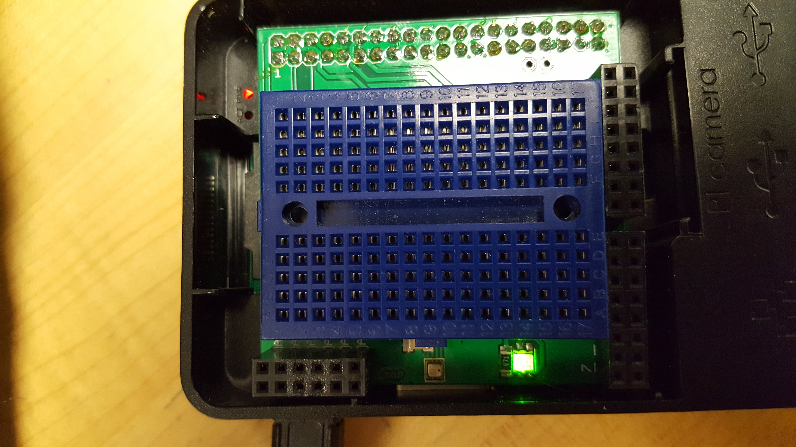
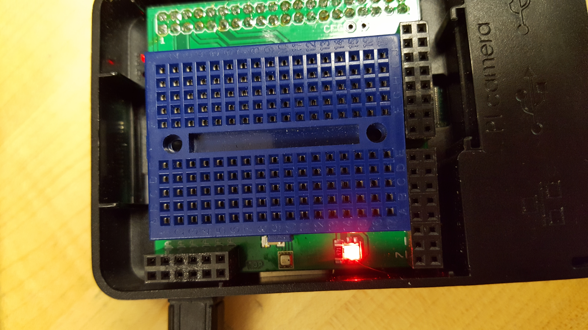

Week 4
- Budget Due -> trade it for your previously submitted work (rubric).
- Remember to wear your glasses for safety.
- Proof of purchase due next week by bringing your parts to class and posting on your build log (be sure to not post any sensitive information).
- Keep in mind that a few seconds of your un-boxing should be videoed to be added to a few seconds of assembly and a few seconds of power-up for your eventual build video.
Week 2
- Start off by watching some soldering videos.
- Project Proposal Due (rubric), hand in your hardcopy of a completed/modified template including the methodology and the respective table. Please also make a decision regarding the following 2 forms and submit with your respective answers: photo consent (mostly for open house and videos) and project consent (though you cover this one mostly through the licensing you choose for your repository).
- Parts Kit. Safety including safety glasses.
- NASA Jove Project.
- Use Eagle with the freeware license to change Simon’s name to your own name on the Printed Circuit Board files available at https://github.com/vladporcila/ModularSenseHatStripped for the sensor hat and get your PCB laser etched in J206 with help from Kelly and/or Vlad their email address is prototypelab_at_humber.ca.
Please take a look at using the Sparkfun Cam file.
- Microsoft Product discussion, MS Project critical path and dependencies are due Week 3 (rubric).
Week 1

Raspberry Pi LED Green light

Raspberry Pi LED Red light
Integration Weeks
- Introduction
- Software Requirements Specification
- Declaration of Authourship
- References: APA format
- Open House
- Presentations